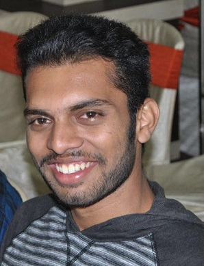

Manoj Gandhi Latha
I currently work as a Solution Consultant at ABeam Technologies, enthusiastic in learning coding on my own, looking for a career growth and work in a high-tech dev environment in the IT industry
👉 manojgl1994@gmail.com
Technical skills
UiPath Studio and StudioX software
Core Java, Python, MySQL, MS Visio
Task Capture and Automation Hub
Jira, Github, Bitbucket and Orchestrator
BFSI domain and Manufacturing domain knowledge
Work History
Solution Consultant | ABeam Technologies
Singapore [Mar/2020 - Present]
Produced more than 25 Robots in OCBC Bank which are successfully running in production. Perfomed a bridge between the stake holders and developers to get the requirement done. Handled L1 supprot for many BOTS
- Participate in Requirement Analysis session and capture all the details through Task Capture.
- In Depth knowledge in Automation Hub and Power BI.
- Prepare Process and Solution Design Document.
- Create a workflow where the UiPath Robot does all the business conditions, which are tracked in JIRA and GitHub.
- Developed more than 25 end to end BOTs which are running in production for more than three years with 95% accuracy.
- Write the Test cases for UAT and move the Robot to Production.
- Prepare a User manual for further User references and give production live support.
- Worked in SharePoint, SAP, AS400 Terminal, SAS script, Telecom, Manufacturing, and banking related automation
- Involved in Production Support for various departments.
RPA Developer | KGiSL
Bangkok [Feb/2018 - Oct/2019]
Worked as a RPA developer/ BA for the Client UTAC. Gained indepth knowledge on orchestrator and Management skills
- Prepare the Solution Design Document and involve in code discussions to maintain In/Out of scopes.
- Stabilize and maintain the coding standards and help peers to follow it.
- Develop a robot with all user conditions and business exception.
RPA Developer | NTT DATA Services
Bangalore [Jun/2015 - Feb/2018]
Started my career as a Fresher in Automation testing. Self learnt core Java and selenium to make the automation smooth. Gained interest towards RPA, did foundation course and started working on RPA projects. Learnt many office cultures in NTT DATA services.
- Learnt UiPath and its tool behaviour
- Well trained Tester – Automation/Manual, worked in Agile methodology
- API and mobile web testing
- Automate the process in Selenium and having the knowledge using API using POSTMAN.
Achievements
🏆 NTT DATA Services - Employee of the Department 2016
🏆 KGiSL – Best BOT delivery 2019
🏆 Linked Recommendation from Harry Hangke Guo [Assistant VP of OCBC bank]
Educational Qualification
Anna University, India
Bachelors in Mechanical Engineering [2011-2015]
- Percentage - 84, Project in Friction Welding , Place - IIT, Chennai.
Kamlavati Higher Secondary School, Thoothukudi, India
Higher Secondary School [2010-2011]
- Mathematics [200/200], Physics [195/200], Chemistry [190/200]
Referees
Subbiah Alagappan [Business Lead in UK], NTT DATA Services, +447405037720,Subbiah.algappan@nttdata.com
Antony Rajesh [Director and Country head], KGiSL, +66 944462307,anto@kgisl.com